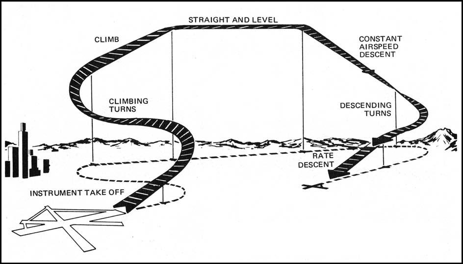
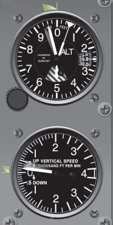
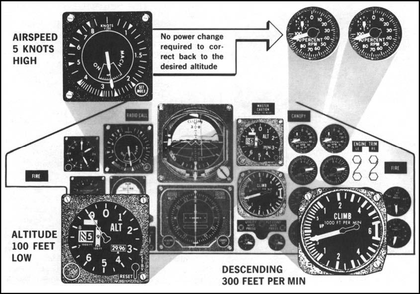
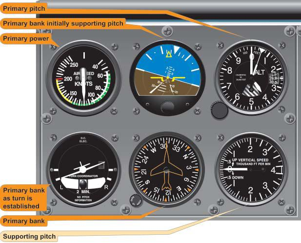
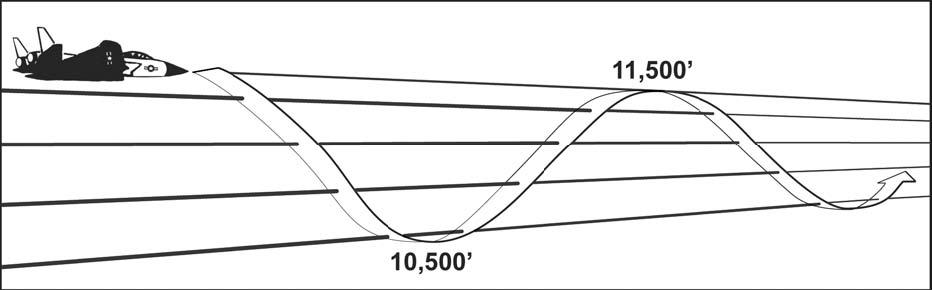
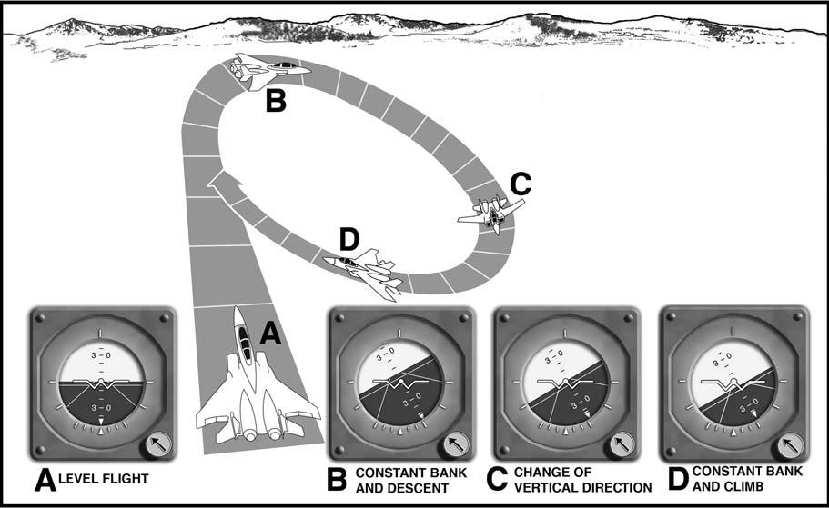
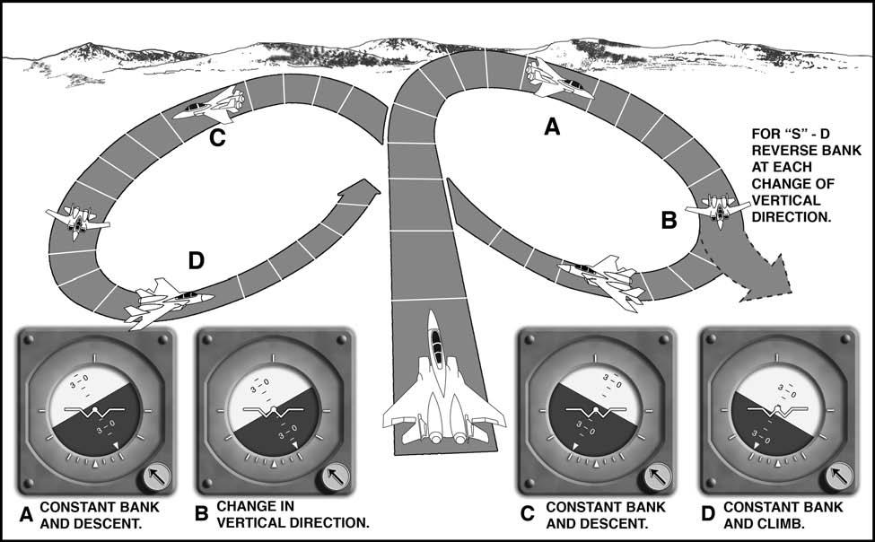
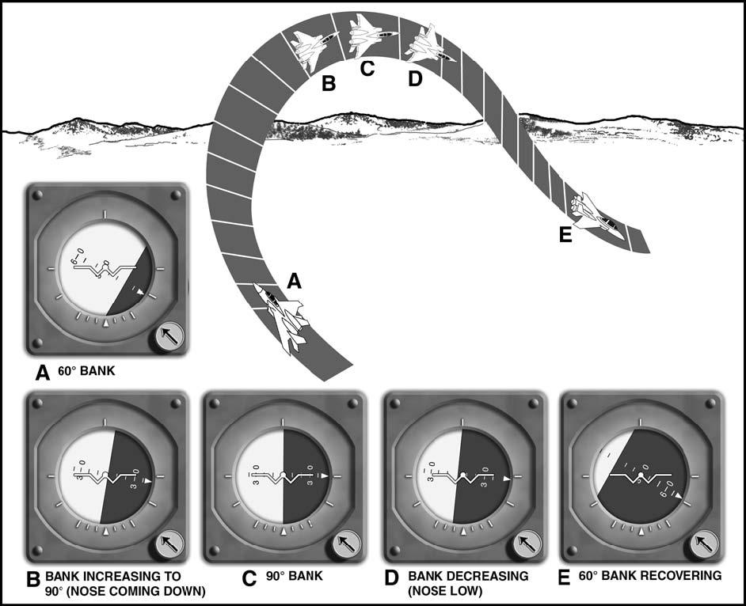
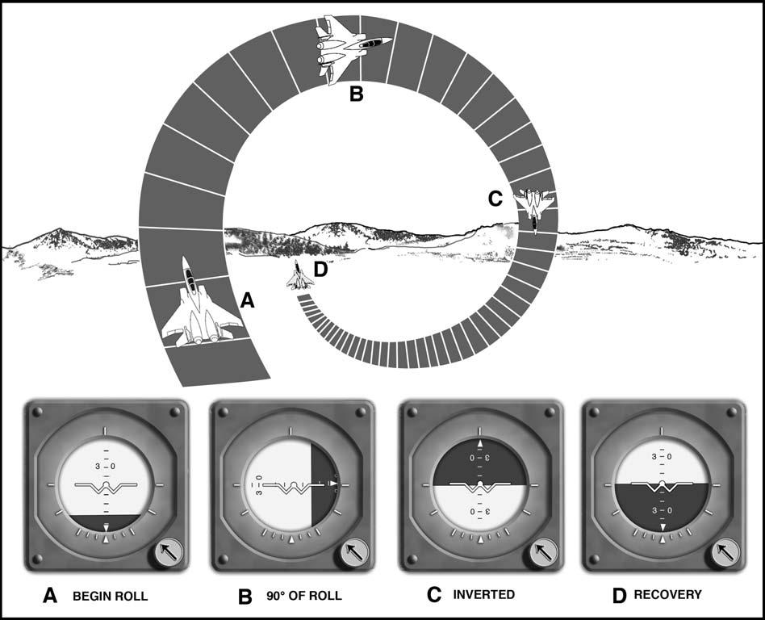
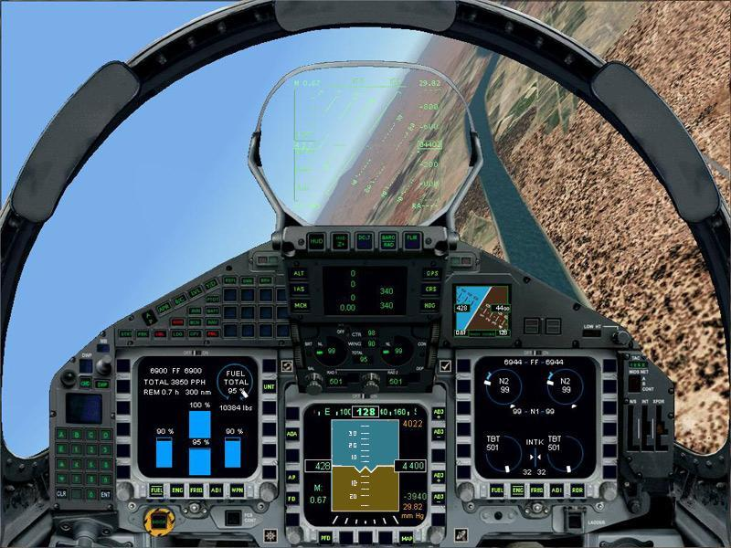

Chapter 2: INSTRUMENT FLIGHT MANEUVERS
2.1. Basic Maneuvers.
The procedures described in this section are those most commonly used during instrument flight (Figure 2.1). A high level of proficiency employing these procedures is necessary to avoid the hazards of instrument flight. Additional procedures may be required for specific training requirements or helicopter operations. Refer to applicable sections of your flight manual. (The ability of the helicopter to maneuver in a smaller amount of airspace has led to some differences between fixed-wing and helicopter instrument procedure obstacle clearance criteria. AFMAN 11-226 United States Standard for Terminal Instrument Procedures (TERPS) outlines these differences as they apply to the rotary-wing environment. Except where specifically addressed in this chapter, helicopters should apply normal procedures to flying instrument approaches, departures, and enroute operations.)
Figure 2.1. Typical Instrument Flight.

2.2. The Instrument Takeoff (ITO).
2.2.1. The ITO is accomplished by referring to both outside visual references and the flight instruments (composite cross-check). The amount of attention given to each reference will vary depending on the existing weather conditions. ITO procedures and techniques are invaluable aids at night, toward and over water or deserted areas, and during periods of reduced visibility. The pilot shall immediately transition to instrument references any time he or she becomes disoriented or when outside visual references become unreliable.
2.2.2. Before performing an ITO, accomplish a thorough before-takeoff check of all flight and navigation instruments and publications. Select the appropriate navigational aids to be used for the departure and set the navigation instruments and switches as required based on the departure assigned by Air Traffic Control (ATC). Thoroughly review, have available and brief crewmembers on the appropriate emergency return approach procedures.
2.2.3. Perform the ITO the same as you would a normal visual departure except that as outside visual cues begin to disappear, shift more attention to the instrument cockpit check and confirm a stable and safe climbout flight path using ADI, altimeter, VVI, airspeed indicator, etc. Once all visual cues are gone, transition solely to instruments and comply with the assigned departure procedure. If clouds are layered, use caution not to trust outside visual cues as a high possibility of spatial disorientation exists.
2.2.4. In helicopters, an ITO may be accomplished from a hover or from the ground as visibility restrictions permit. Normally, a composite takeoff is accomplished using normal visual meteorological conditions (VMC) procedures and combining reference to the flight instruments with outside visual references to provide a smooth transition from VMC to instrument meteorological conditions (IMC) flight. Helicopter ITOs may have to be accomplished entirely on instruments due to restrictions to visibility induced by rotor downwash on dust, sand, or snow. Follow flight manual procedures for an ITO where visibility is restricted due to rotor downwash.
2.3. Individual Maneuvers.
2.3.1. Straight and Level Flight. Straight and level unaccelerated flight consists of maintaining desired altitude, heading, and airspeed.
2.3.1.1. Maintaining a Desired Altitude.
2.3.1.1.1. Maintaining altitude is accomplished by setting a specific pitch on the ADI. In general, as airspeed decreases, a higher pitch attitude will be required to maintain altitude due to the loss of lift. Conversely, higher airspeeds will require lower pitch attitudes. Each aircraft has basic pitch and power settings to maintain altitude and airspeed but these may need to be adjusted slightly for various atmospheric conditions.
2.3.1.1.2. Pitch corrections. While maintaining altitude, continue the instrument crosscheck. If the altimeter or VVI indicate an altitude deviation, a pitch change will be necessary. It is important to use control pressure more than movement, make smooth and small pitch changes, and allow the performance instruments time to sense the new attitude before making an additional correction. The most common errors when correcting altitude deviations are "chasing" the VVI rather than setting a new pitch on the ADI, and making erratic or large control inputs. Once back on the desired altitude, make another small and smooth pitch correction on the ADI to maintain altitude remembering that it will be slightly different than the pitch setting held when the altitude deviation originally occurred.
2.3.1.1.2.1. As a rule of thumb, when making pitch corrections, a VVI one to two times the amount of the altitude deviation will prevent overshoots. (e.g. If you are 100 feet off altitude, set a pitch that will produce a 100 to 200 foot per minute climb or descent on the VVI.) Refer to AFMAN 11-217V3 for a discussion of the 60:1 rule and its use for setting a VVI. Approaching the desired altitude, begin the pitch change to level off approximately 10% of your vertical rate. (e.g. If VVI shows 100 feet per minute, level off 10 feet prior to your altitude. Figure 2.2)
Figure 2.2. Leading the Level Off.

2.3.1.2. Maintaining a Desired Heading.
2.3.1.2.1. Maintaining a desired heading is accomplished by maintaining a zero bank attitude in coordinated flight. If a heading deviation occurs, make a smooth bank change on the ADI to return to the desired heading. As a guide, the bank attitude change on the ADI should equal the heading deviation in degrees, not to exceed 30°. For example, if the heading deviation is 10°, then 10° of bank would produce a suitable rate of correction. (At high true airspeeds a larger bank may be needed to prevent a prolonged correction.)
2.3.1.2.1.1. If a zero bank attitude is maintained and the heading changes, the ADI may be precessing. Confirm this by referencing backup ADI's. If precession is noted, it may be necessary to transition to the backup ADI depending on the severity of the precession.
2.3.1.3. Maintaining Airspeed.
2.3.1.3.1. Establishing or maintaining an airspeed is accomplished by referring to the airspeed or mach indicator and adjusting the power, drag devices (for large airspeed changes) or aircraft attitude. Knowledge of the approximate power required to establish a desired airspeed at a specific attitude will aid in making power adjustments. After the approximate power setting is established, a crosscheck of the airspeed indicator will indicate if subsequent power adjustments are required.
2.3.1.3.1.1. An airspeed deviation may be the result of a pitch change, not an incorrect power setting. (See Figure 2.3) Check all other flight parameters when an airspeed deviation occurs. Conversely, if in level flight and a power change is necessary to correct airspeed, the new power setting or the employment of drag devices coupled with a change in airspeed may induce a climb or descent. This relationship between airspeed and aircraft attitude further illustrates the importance of a good instrument crosscheck.
Figure 2.3. Airspeed Deviation.

2.3.2. Level Turns. Many of the pitch, bank, and power principles discussed in maintaining straight and level flight apply while performing level turns. Performing a level turn requires an understanding of several factors: how to enter the turn, how to maintain bank, altitude, and airspeed during the turn; and how to return to level flight. A standard rate turn is defined as a rate at which the aircraft will make a 360 degree turn in two minutes (120 seconds).
2.3.2.1. Bank Control. As a guide, to prevent heading overshoots or prolonged turns, for heading changes of 30° or less, the bank angle should approximate the number of degrees to be turned (Figure 2.4). For heading changes of more than 30°, use a bank angle of 30°. High turn airspeeds or flight manual procedures may require other angles of bank. Helicopters should use no more than standard rate turns (15⁰ to 20⁰ ) when operating between 80 and 120 knots.
2.3.2.2. To enter a turn, refer to the ADI while applying smooth and coordinated control pressures to establish the desired angle of bank. It will normally be necessary to increase pitch slightly to counteract the loss of vertical lift due to the bank. The increased pitch in prolonged turns will require consistent back pressure on the elevator control. Trimming off the pressure on the elevator will aid in smooth aircraft control and enhance crosscheck capability in the turn. Additionally, to maintain airspeed, an increase in power will be required to counteract the induced drag produced by the elevator inputs. The bank, pitch change and power increase should all be applied smoothly as the aircraft enters the turn to prevent the need for large corrections during the turn.
Figure 2.4. Level Turns.

2.3.2.3. To roll out of a turn on a desired heading, calculate a lead point that is, as a guide, approximately one-third the angle of bank used in the turn. (Figure 2.4) When the lead point is reached, simply reverse the bank, pitch, trim and power inputs used to roll into the turn, smoothly and simultaneously. Once on the new heading, check for deviations from straight and level flight and apply corrections as needed.
2.3.2.4. Steep Turns. Steep turns are practiced in simulated instrument conditions (hooded or goggled) and are normally any turn greater than 30° of bank. The entry and exit into and from a steep turn is identical to a normal turn except that all inputs will be more pronounced. The increased bank will require more pitch, more back pressure and more power to counteract the further reduced vertical lift. The rate of turn will be much faster in a steep turn and will require a more aggressive lead point as well as smooth yet positive control inputs to roll out on the correct heading without significant altitude or airspeed deviations. For helicopters, any rate greater than standard is considered a steep turn, most helicopters practice steep turns using 30° of bank, which is the maximum angle of bank recommended under instrument conditions.
2.3.3. Timed Turns and Use of the Magnetic Compass. Heading indicator failure may require use of the magnetic compass for heading information. The magnetic compass provides reliable information only during straight, level, and unaccelerated flight. Because of this limitation, timed turns are recommended when making heading changes by reference to the magnetic compass.
2.3.3.1. A timed turn is accomplished by establishing a bank attitude on the ADI that will result in a desired rate of turn as shown by the turn needle. A single needle width deflection on a 4-minute turn needle indicates 1 1/2° per second rate of turn, while a double needle width deflection indicates 3° per second rate of turn. Therefore, a 90° turn can be made by establishing a bank angle that produces a double needle width deflection for 30 seconds.
2.3.3.2. Alternate method. Although timed turns are preferred when using the magnetic compass, turns to headings can be made by referring directly to the magnetic compass and rolling out of the turn at a predetermined "lead" point. Dip error (or magnetic dip) must be considered in computing the lead point for rollout. Magnetic dip is the tendency of the compass needles to point down as well as to the magnetic pole. Dip is greatest near the poles and least near the Magnetic Equator. The compass card is designed to operate in the horizontal, therefore, any movement from the horizontal plane introduces dip error. Turns to the north require a normal lead point plus a number of degrees equal to the flight latitude while turns to the south require turning past the desired heading by the number of degrees equal to the flight latitude minus the normal lead. Dip error is negligible when turning to east or west.
2.3.4. Climbs and Descents. Climbing and descending maneuvers can be performed as constant airspeed or constant rate. The constant airspeed maneuver is accomplished by setting power and varying pitch to maintain a specific airspeed. The constant rate maneuver is accomplished by varying both pitch and power to maintain a specific airspeed and vertical velocity. Either type of climb or descent may be performed while maintaining a constant heading or while turning and should be practiced using airspeeds, configurations, and altitudes used in actual instrument flight.
2.3.4.1. Constant Airspeed Climbs and Descents.
2.3.4.1.1. Most aircraft have a standard set of pitch and power settings for certain airspeeds and configurations. For instance, in order to maintain 300 KIAS in a clean configuration, an aircraft might require 10° nose down pitch at idle power. A pilot might also know that for that aircraft, each degree of pitch change at a constant power setting and configuration will change the airspeed 10KIAS. With this simple knowledge, a pilot has a very high level of control over his aircraft.
2.3.4.1.2. To perform the constant airspeed climb or descent make a smooth and simultaneous change in pitch and power corresponding to the desired airspeed and configuration. Once the initial attitude is established, fine-tune the airspeed by adjusting pitch. Confirm the pitch change by noting a change on the VVI and wait for the airspeed to stabilize. Continue this process until the desired airspeed is attained. Remember that this procedure must be accomplished as part of a complete instrument crosscheck.
2.3.4.1.3. Approaching your level-off altitude (approximately 10% of your vertical velocity is a good lead point) smoothly adjust pitch and power to maintain a constant altitude without changing airspeed. Note: For climb or descent rates of 2000 or more, at 1000 feet prior to the level off altitude it is a good technique to cut the pitch attitude in half to enable a smoother level-off. Adjust power as necessary to maintain airspeed. (On most aircraft, changing the total fuel flow in pph the same amount as the change in VVI will result in a constant airspeed.)
2.3.4.2. Rate Climbs and Descents.
2.3.4.2.1. Rate climbs and descents are similar to constant airspeed climbs and descents but require a constant VVI. Using the 60 to 1 rule (AFMAN 11-217V3, Chapter 3) we know pitch multiplied by airspeed in nm/min gives VVI in 100's of ft/min. (e.g. Traveling 300 KIAS or 5 nm/min, a 2° pitch change will result in a VVI of 1000 ft/min). Another rule of thumb that works for most aircraft: A change in total fuel flow in pph equal to the change in VVI will maintain a given airspeed. (e.g. On a two engine aircraft, reducing power by 500 pph on each engine will maintain a constant airspeed if the aircraft pitches down to maintain 1000 ft/min VVI)
2.3.4.2.2. EXAMPLE: From level flight at 240KIAS (4 nm/min) a C-130 pilot desires to maintain 240 KIAS with a VVI of 2000 ft.min. Smoothly decreasing pitch by 5° and reducing fuel flow on each engine by 500 pph will achieve the desired descent rate at the approximate desired airspeed. A good instrument crosscheck and some minor power adjustments will fine-tune the descent profile. Accomplish the level off as described in 2.3.5.1.3.
2.3.4.3. Emergency Descent. (Helicopters) Basic instrument techniques may be used to safely perform an emergency descent in IMC. Because there is no set procedure, you must consider all variables when executing an emergency descent. If your helicopter is equipped with a radar altimeter, it is a good technique to set the low altitude warning marker at or slightly above the required flare altitude. This will give you a reminder to start a flare if the flare altitude is reached prior to breaking out of IMC.
2.3.4.3.1. Power-On Descent. If a long distance must be covered, then a constant airspeed descent could be selected using higher than normal airspeeds. If a short distance is to be covered, then a constant rate descent could be selected using high rates of descent and slower than normal airspeeds.
2.3.4.3.2. Power-Off Descent (Autorotation). If an emergency requires autorotation, enter smoothly by lowering the collective and closely cross-checking the control and performance instruments. Knowing (and briefing) the approximate ceiling will aid in determining when to begin a systematic scan for outside references. Crew coordination will be critical and should be briefed prior to flight by the aircraft commander.
2.4. Basic Aircraft Control Maneuvers—Fixed Wing.
2.4.1. Vertical "S" Series. The vertical "S" maneuvers are proficiency maneuvers designed to improved a pilot's crosscheck and aircraft control. There are four types: the A, B, C, and D which can be flown utilizing various configurations, airspeeds, turn and decent rates, etc. to practice all phases of instrument flight (cruise, approach descent, missed approach, etc.).
2.4.1.1. The vertical "S"-A maneuver (Figure 2.5). The vertical S-A is a continuous series of rate climbs and descents flown on a constant heading utilizing a vertical velocity compatible with aircraft performance.
Figure 2.5. Vertical "S"- A.

2.4.1.2. The vertical "S"- B (Figure 2.6). The vertical "S"-B is the same as the vertical "S"- A except that a constant angle of bank is maintained during the climb and descent. The angle of bank used should be compatible with aircraft performance (usually that required for a normal turn). The turn is established simultaneously with the initial climb or descent.
Figure 2.6. Vertical "S"- B.

2.4.1.3. The vertical "S"- C (Figure 2.7). The vertical "S"-C is the same as vertical "S"B, except that the direction of turn is reversed at the beginning of each descent. Enter the vertical "S" - C in the same manner as the vertical "S"- B.
2.4.1.4. Vertical "S"- D. (Figure 2.7). The vertical "S"- D is the same as the vertical "S"- C, except that the direction of turn is reversed simultaneously with each change of vertical direction. Enter the vertical "S"- D in the same manner as the vertical "S"- B or C.
Figure 2.7. Vertical "S"- C and "S"- D.

2.4.2. Confidence Maneuvers. Present missions require some aircraft to be flown in all attitudes under instrument conditions. Such aircraft have ADIs capable of indicating these attitudes. Confidence maneuvers are basic aerobatic maneuvers designed to gain confidence in the use of the ADI in extreme pitch and bank attitudes. Mastering these maneuvers will be helpful when recovering from unusual attitudes. The pilot should consult the aircraft flight manual for performance characteristics and limitations before practicing these maneuvers.
2.4.2.1. Wingover (Figure 2.8). Begin the maneuver from straight and level flight. After obtaining the desired airspeed, start a climbing turn in either direction while maintaining the wing tip of the miniature aircraft on the horizon bar until reaching 60° of bank. Allow the nose of the aircraft to start down while continuing to increase the angle of bank, planning to arrive at 90° of bank as the fuselage dot of the miniature aircraft reaches the horizon bar. Begin decreasing the angle of bank as the fuselage dot of the miniature aircraft reaches the horizon bar so that the wing tip of the miniature aircraft reaches the horizon bar as 60° of bank is reached. Maintain the wing tip on the horizon bar while rolling to a wings level attitude. The rate of roll during the recovery should be the same as the rate of roll used during the entry. Control pitch and bank throughout the maneuver by reference to the ADI.
Figure 2.8. Attitude Indications During Wingover.

2.4.2.2. Aileron Roll (Figure 2.9). Begin the maneuver from straight and level flight. After obtaining the desired airspeed, smoothly increase the pitch attitude with the wings level 15° to 25° nose up on the ADI. Start a roll in either direction and adjust the rate of roll so that, when inverted, the wings will be level as the fuselage dot of the miniature aircraft passes through the horizon bar. Continue the roll and recover to level flight. The entire maneuver should be accomplished by reference to the ADI. Use sufficient back pressure to maintain normal seat pressures (approximately 1 g) throughout the maneuver.
Figure 2.9. Attitude Indications During Aileron Roll.

2.5. Unusual Attitudes.
2.5.1. Definition. An unusual attitude is an aircraft attitude occurring inadvertently. It may result from one factor or a combination of several factors such as turbulence, channelized attention, instrument failure, inattention, spatial disorientation, lost wingman, or transition from VMC to IMC. In most instances these attitudes are mild enough to recover by reestablishing the proper attitude for the desired flight condition and resuming a normal crosscheck. As a result of extensive tactical maneuvering, the pilot may experience unusual attitudes even in VMC. This may be aggravated by the lack of a definite horizon or by lack of contrast between the sky and ground or water.
2.5.1.1. WARNING: The pilot will immediately transition to instrument references any time he or she becomes disoriented or when outside visual references become unreliable.
2.5.1.2. WARNING: NVGs may be distracting during unusual attitude recoveries. Once transition to instruments has occurred, do not rely on outside NVG cues until the aircraft is recovered.
2.5.2. Techniques of recovery. Techniques of recovery should be compatible with the severity of the unusual attitude, the characteristics of the aircraft, and the altitude available for the recovery. The procedures in this section are not designed for recovery from controlled tactical maneuvers.
2.5.3. Principles and considerations. The following aerodynamic principles and considerations are applicable to the recovery from unusual attitudes:
2.5.3.1. Reducing bank in a dive or increasing bank in a climb aids pitch control.
2.5.3.2. Power and drag. Power and drag devices used properly aid airspeed control if the flight manual allows their use in unusual attitude situations.
2.5.3.3. Sky pointer. For ADIs with a bank pointer and bank scale at the top, the bank pointer that is always aligned above and perpendicular to the surface of the earth is considered a sky pointer. Rolling towards the sky pointer to place it in the upper half of the case will correct an inverted attitude.
2.5.3.4. Ground pointer. For ADIs with the bank scale at the bottom, rolling in the direction that will place the pitch reference scale right side up will correct an inverted attitude.
2.5.4. Recognizing an Unusual Attitude is critical to a successful recovery. Normally, an unusual attitude is recognized in one of two ways -- an unusual attitude "picture" on the ADI or unusual performance on the performance instruments. Regardless of how the attitude is recognized, verify that an unusual attitude exists by comparing control and performance instrument indications prior to initiating recovery on the ADI (Figure 2.10). This precludes entering an unusual attitude as a result of correcting for erroneous instrument indications. Additional independent attitude indicating sources (standby ADI, copilot's ADI, etc.) should be used to verify the actual aircraft attitude. If there is any doubt as to proper ADI operation, then recover using ADI inoperative procedures.
Figure 2.10. Verify That an Unusual Attitude Exists.

2.5.5. Fixed Wing Recovery Procedures--ADIs Operative. For fixed-wing aircraft, use the following procedures if specific unusual attitude recovery procedures are not in the flight manual.
2.5.5.1. If diving, adjust power or drag devices as appropriate while rolling to a wings level, upright attitude, and correct to level flight on the ADI. Do not add back pressure until less than 90° of bank.
2.5.5.2. If climbing, use power and bank as necessary to assist pitch control and avoid negative G forces. As the ADI airplane symbol approaches the horizon bar, adjust pitch, bank, and power to complete recovery and establish the desired aircraft attitude. When recovering from a steep climb, care must be exercised in some aircraft to avoid exceeding bank limitations.
2.5.5.3. Bank and power. During unusual attitude recoveries, unless necessary to avoid a greater emergency, ensure bank and power do not exceed aircraft limitations.
2.5.6. Fixed Wing Recovery Procedures--ADIs Inoperative. With no functioning ADI's, successful recovery from unusual attitudes depends greatly on pilot proficiency and early recognition of ADI failure. ADI failure should be immediately suspected if control pressures are applied without corresponding ADI changes. Another example would be performance instrument indications that contradict the "picture" on the ADI. Should an unusual attitude be encountered with no functioning ADI's, the following procedures are recommended:
2.5.6.1. If the flight manual allows and an available autopilot is not slaved to gyros of the malfunctioning ADI's, consideration may be given to engaging the autopilot and setting it to straight and level flight. If airspeed or vertical velocity are excessive, use the procedures below to return the aircraft to acceptable flight parameters before attempting to engage the autopilot.
2.5.6.2. Climb or dive. Determine whether the aircraft is in a climb or a dive by referring to the airspeed, altimeter, and vertical velocity indicators.
2.5.6.3. If diving, roll to center the turn needle and recover from the dive. Adjust power or drag devices as appropriate. (Except for vertical attitudes, rolling "away" from the turn needle and centering it will result in an upright attitude).
2.5.6.4. If climbing, use power as required. If the airspeed is low or decreasing rapidly, pitch control may be aided by maintaining a turn of approximately standard rate on the turn needle until reaching level flight.
2.5.6.5. Level flight. Upon reaching level flight, center the turn needle. The aircraft is level when the altimeter stops. The vertical velocity indicator lag error may cause it not to indicate level until the aircraft passes level flight.
2.5.7. Helicopter Recovery Procedures -- Attitude Indicators Operative. Recoveries from helicopter unusual attitudes are unique due to rotary-wing aerodynamics as well as application of the control and performance concept to helicopter flight. Application of improper recovery techniques can result in blade stall, power settling, or an uncontrollable yaw if recovery is delayed. Due to these differences, unusual attitude recoveries for helicopters are decidedly different from fixed-wing recoveries and require immediate action. Use the following guidance if specific unusual attitude recovery procedures are not contained in the flight manual:
2.5.7.1. Diving. If diving, consider altitude, acceleration limits, and the possibility of encountering blade stall. If altitude permits, avoid rolling pullouts. To recover from a diving unusual attitude, roll to a wings level indication then establish a level flight attitude on the attitude indicator. Adjust power as necessary and resume a normal crosscheck.
2.5.7.2. Climbing. If climbing, consider pitch attitude and airspeed. If the inadvertent pitch attitude is not extreme (10° or less from level flight), smoothly lower the miniature aircraft back to a level flight indication, level the wings, and resume a normal crosscheck using power as required. For extreme pitch attitudes (above 10°), bank the aircraft in the shorter direction toward the nearest 30° bank index. The amount of bank used should be commensurate with the pitch attitude and external conditions, but do not exceed 30° of bank in making the recovery. Allow the miniature aircraft to fall toward the horizon. When the aircraft symbol is on the horizon, level the wings and adjust the aircraft attitude to a level flight indication. Use power as necessary throughout the recovery.
2.5.7.3. Hover. If the aircraft is in a hover or low speed when the unusual attitude is recognized, smoothly but immediately roll to a wings level attitude and apply maximum power available. Once attitude control is reestablished, execute an ITO, or refer to hover velocity instrumentation to maintain position (if available). This condition is most common during dust or white out situations, or when performing terminal operations at night and/or over water.
2.5.7.3.1. NOTE: In helicopters encountering an unusual attitude as a result of blade stall, collective must be reduced before applying attitude corrections if the aircraft is in a climbing unusual attitude. This will aid in eliminating the possibility of aggravating the blade stall condition. To aid in avoiding blade stall in a diving unusual attitude recovery, reduce power and bank attitude before initiating a pitch change. In all cases avoid abnormal positive or negative G loading which could lead to additional unusual attitudes or aircraft structural damage.
2.5.8. Helicopter Recovery Procedures -- Attitude Indicators Inoperative. With an inoperative attitude indicator, successful recovery from unusual attitudes depends greatly on pilot proficiency and early recognition of attitude indicator failure. For example, attitude indicator failure should be immediately suspected if control pressures are applied for a turn without corresponding attitude indicator changes. Another example would be satisfactory performance instrument indications that contradict the "picture" on the attitude indicator. Should an unusual attitude be encountered with an inoperative attitude indicator, the following procedures are recommended:
2.5.8.1. Climb or dive. Determine whether the aircraft is in a climb or a dive by referring to the airspeed, altimeter, and vertical velocity indicators.
2.5.8.2. Diving. If diving, roll to center the turn needle and recover from the dive. Adjust power as appropriate. (Disregarding vertical attitudes, rolling "away" from the turn needle and centering it will result in an upright attitude.)
2.5.8.3. Climbing. If climbing, use power as required. If the airspeed is low or decreasing rapidly, pitch control may be aided by maintaining a standard rate turn on the turn needle until reaching level flight. If the turn needle in a flight director system is used, center the turn needle. This is because it is very difficult to determine between a standard rate turn and full needle deflection.
2.5.8.4. Level off. Upon reaching level flight, center the turn needle. The aircraft is level when the altimeter stops. The vertical velocity indicator lag error may cause it not to indicate level until the aircraft passes level flight.
2.5.9. WARNING: Spatial disorientation may become severe during the recovery from unusual attitudes with inoperative ADI's. Extreme attitudes may result in an excessive loss of altitude and possible loss of aircraft control. If a minimum safe altitude for unusual attitude recovery is not in the flight manual, if applicable, the pilot shall decide upon an altitude at which recovery attempts will be discontinued and the aircraft abandoned.
2.5.10. CAUTION: Due to limited attitude information, recovery from unusual attitudes using a HUD may be difficult or impossible.